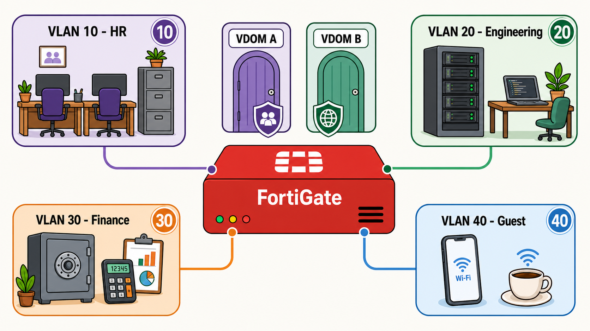
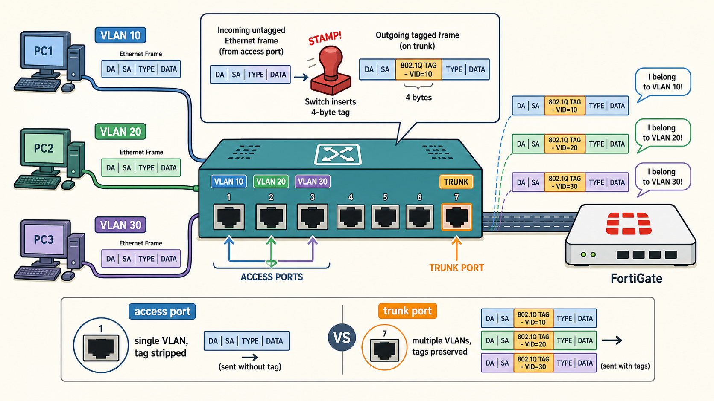
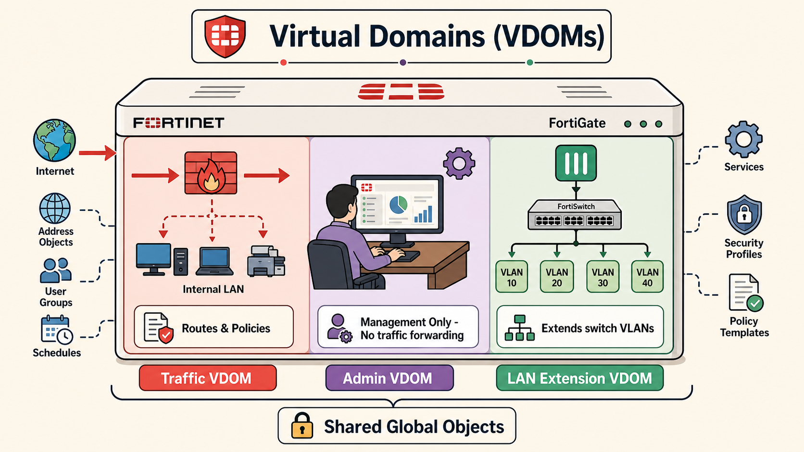

VLANs and VDOMs
Segmenting enterprise networks with VLAN tagging and FortiGate virtual domain partitioning

Detailed cartoon flat illustration of a VLAN and VDOM enterprise network. Light cream background. At the center, a cartoon FortiGate firewall appliance (boxy red device with glowing indicator lights, labeled 'FortiGate') has multiple colored cables plugging into its ports. Each cable leads to a distinct floating bubble representing a VLAN zone: VLAN 10 — HR (soft lavender bubble) with cartoon desks and a filing cabinet; VLAN 20 — Engineering (pale mint bubble) with a cartoon server rack and a laptop on a desk; VLAN 30 — Finance (soft peach bubble) with a cartoon safe and a calculator; VLAN 40 — Guest (baby blue bubble) with a cartoon smartphone and a coffee cup. Each bubble has a numbered badge in its top-right corner showing the VLAN ID. At the top of the image, the FortiGate is split into two cartoon 'virtual doors' labeled VDOM A and VDOM B, each door a different pastel color, showing that the device is logically partitioned. Small 802.1Q tag icons (mini rectangles labeled 'TAG') float on the connecting cables. Fully detailed cartoon style, soft flat fills, light pastel palette (lavender, mint, peach, baby blue, cream), bold clean outlines, white background. Labels in a friendly rounded sans-serif.
VLAN Overview & Tagging
VLANs (Virtual Local Area Networks) are the primary tool for segmenting a flat Layer 2 network into multiple isolated broadcast domains without requiring separate physical hardware. The industry standard is IEEE 802.1Q, which inserts a 4-byte tag into an Ethernet frame to carry VLAN ID information (VID 1–4094). Switches use this tag to know which VLAN a frame belongs to and whether to forward, drop, or strip the tag when handing the frame off to an end device.
Beyond basic 802.1Q, enterprise networks may use QinQ (802.1ad) — double-tagging that stacks a service provider tag on top of a customer tag, allowing multiple customer VLANs to be tunneled through a carrier network sharing the same VLAN space. VXLAN (Virtual Extensible LAN) takes segmentation further by encapsulating Layer 2 frames inside UDP/IP packets, enabling virtual networks that span physical data centers or cloud regions with up to 16 million segment IDs.

Detailed cartoon flat illustration of 802.1Q VLAN tagging on a network switch. Light cream background. Center stage: a cartoon network switch (boxy teal appliance with multiple labeled ports along the bottom). On the left side, three cartoon computers connect via cables into access ports (ports labeled 'VLAN 10', 'VLAN 20', 'VLAN 30' in color-coded badges). Each computer sends a plain Ethernet frame shown as a small colorful rectangle. As the frame enters the switch, a cartoon 'stamp' animation shows a 4-byte tag being inserted into the frame — the tag is drawn as a bright sticker slapped onto the rectangle, labeled '802.1Q TAG · VID=10' in bold. On the right side of the switch, a fat trunk port carries all three tagged frames up a wider cable to a cartoon FortiGate firewall. Small speech bubbles from the frames say things like 'I belong to VLAN 10!'. At the bottom, a small legend shows: access port icon (single VLAN, tag stripped) vs trunk port icon (multiple VLANs, tags preserved). Fully detailed cartoon style, soft flat fills, light pastel palette (teal, lavender, mint, peach), bold clean outlines, cream background. Friendly rounded sans-serif labels.
VLANs on FortiGate Interfaces
FortiGate supports VLANs through multiple interface types. VLAN subinterfaces attach to a physical or aggregate port and carry a specific 802.1Q tag — each subinterface appears as an independent routed interface with its own IP, policies, and DHCP scope. Hardware switches (on models with an integrated switch fabric) allow multiple physical ports to be grouped into a single Layer 2 domain; combined with VLAN configuration this lets FortiGate behave like a managed access switch without external hardware.
Software switches provide the same grouping capability in software on models without a dedicated switch chip. FortiLink is Fortinet's proprietary protocol for managing FortiSwitch units directly from FortiGate — once a FortiSwitch is authorized, FortiGate controls its port VLANs, spanning tree, and security policies as if they were local interfaces. MCLAG (Multi-Chassis Link Aggregation Group) allows two FortiSwitch units to present a single logical LAG to an upstream device, eliminating spanning-tree blocked links and providing active-active redundancy at the access layer.

Detailed cartoon flat illustration of FortiGate VDOM types side by side. Light cream background. The FortiGate appliance is drawn as a large cartoon box in the center, split vertically into three colored columns, each representing a VDOM type. Left column — Traffic VDOM (soft red/coral): shows cartoon traffic arrows flowing in from the internet (globe icon) on the left, through the VDOM, and out to an internal LAN (desks) on the right — labeled 'Routes & Policies'. Center column — Admin VDOM (soft lavender): shows a cartoon admin person at a desk with a management console, labeled 'Management Only · No traffic forwarding'. Right column — LAN Extension VDOM (soft mint green): shows FortiGate connecting to a FortiSwitch icon below, with VLAN subinterfaces branching out like a tree, labeled 'Extends switch VLANs'. Above the three columns, a banner reads 'Virtual Domains (VDOMs)' with a dividing line. Below each column, a small badge shows the VDOM type name. Small global-object icons (gears and lock) float outside the split, labeled 'Shared Global Objects'. Fully detailed cartoon style, soft flat fills, pastel palette, bold outlines, cream background.
VDOMs & Virtual Segmentation
Virtual Domains (VDOMs) partition a single FortiGate into multiple independent firewall instances. Each VDOM has its own routing table, firewall policies, security profiles, and administrators — traffic in one VDOM cannot cross into another without an explicit inter-VDOM link and matching policy. This makes VDOMs ideal for managed service providers hosting multiple customers on shared hardware, or enterprises that need strict regulatory separation between departments.
FortiGate supports three VDOM types: Traffic VDOMs forward user traffic and run full security inspection; Admin VDOMs are dedicated management planes that carry no user traffic; LAN Extension VDOMs extend the switch fabric from a FortiSwitch or FortiAP without performing routing. Global objects (such as certain address objects and services) can be shared across all VDOMs to reduce duplication. Administrators can be scoped to individual VDOMs or granted super-admin privileges across all. For inter-VDOM communication, virtual links (VDOM links) create a logical point-to-point connection between two VDOMs, with policies controlling exactly what crosses the boundary.